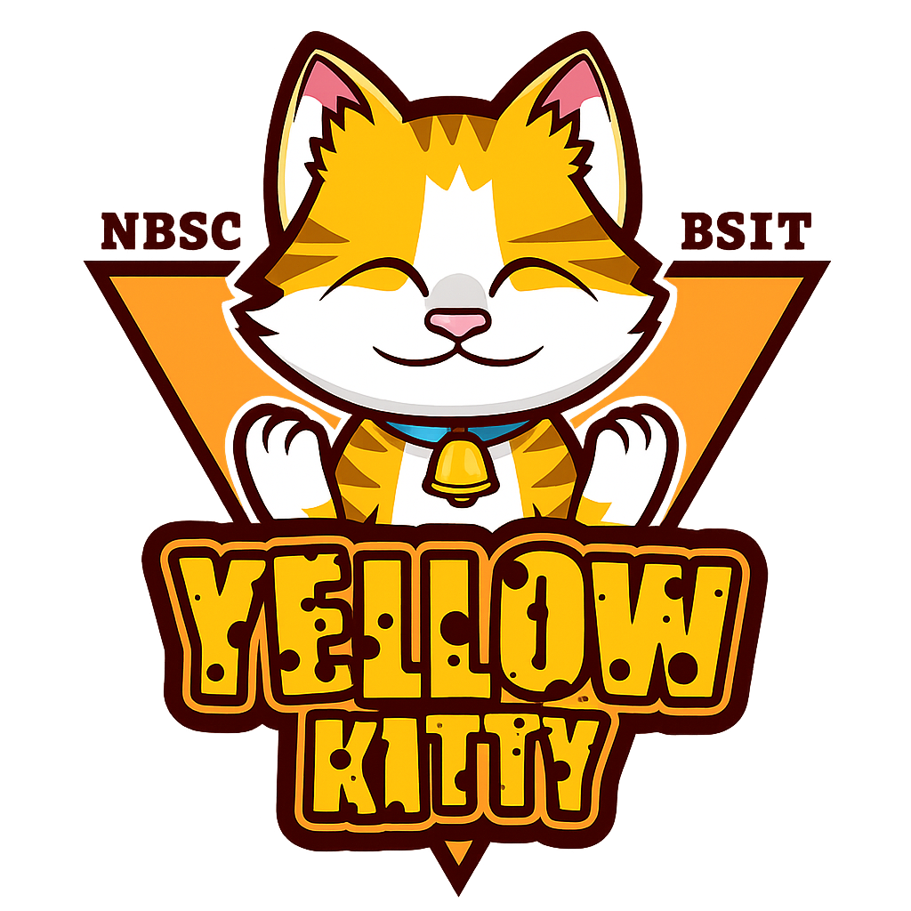
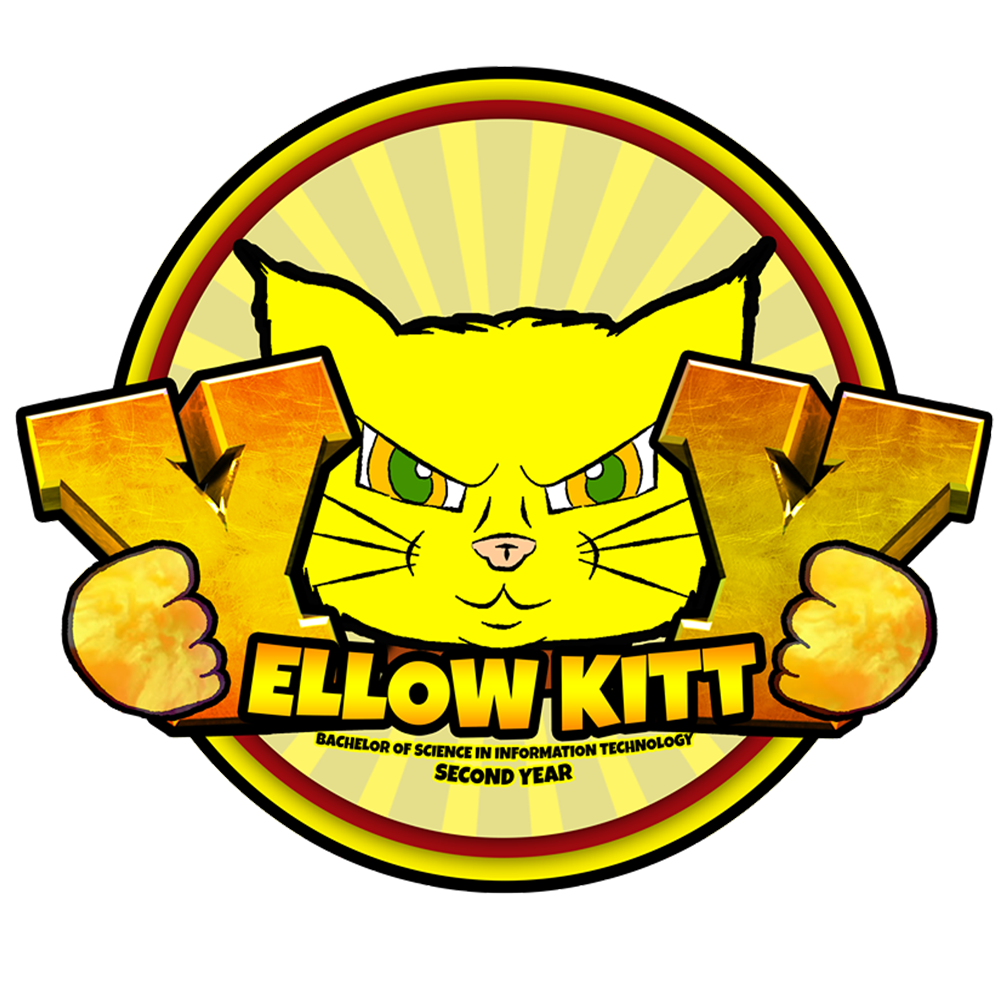

The Yellow Kitty 🐱
Grace in Learning, Warmth in Community.

Our Mission
The Yellow Kitty fosters collaboration, creativity, and emotional intelligence within the field of information technology. Students promote an environment of encouragement, academic skill, and innovative teamwork.
Note: Yellow Kitties are known for their supportive leadership and strong sense of
unity.
Yellow Kitty Mascot Status Check
The Yellow Kitty is currently purring peacefully.
Origin & History of the Yellow Kitty
Logo Details

Past Logo
- [name of logo designer]
- [when was the logo made]
- [Meaning behind logo elements (e.g. color, shapes, images)]
- [optional: evolution of logos]
Current Logo
Officers & Representatives
Faculty & Advisers
Batch Profile
Vision for the Future